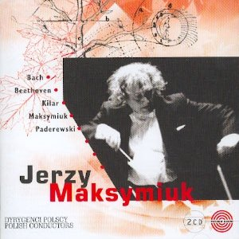
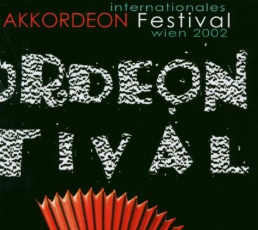
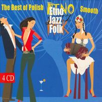
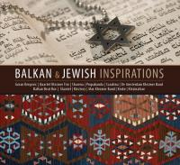
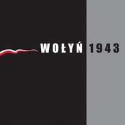
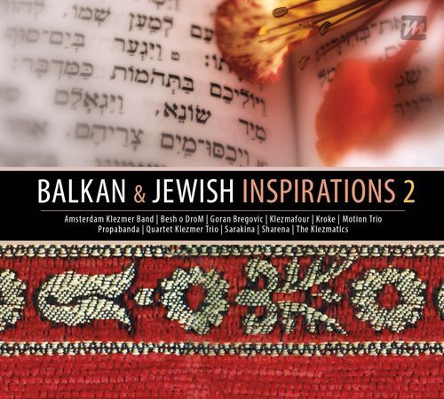
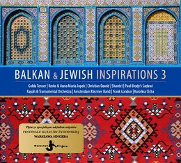

CD BALKANTRON
(Production: Amadeus, Under the patronage:
Bułgarski Instytut Kultury w Warszawie, Folk24, Pismo Folkowe), 2017
Udział w produkacjach innych wydawnictw:

2CD JERZY MAKSYMIUK Kilar Paderewski Beethoven, Cykl: polscy dyrygenci, Udział w nagraniu z Orkiestrą Filharmonii Białystok, J.Grekow - partia akordeonu, Kompozycja: J.Maksymiuk - Arbor vitale
(Production: Polskie Radio SA, Warszawa), 2002

CD Internationales Akkordeon Festival Wien 2002, 1 composition: Dilmana,
(Production: Extraplatte, Austria, Wien, ASIN: B00007KMPC), 2003

CD The Best Of Polish Smooth Etno Folk Jazz, 2006
Migrant Music Vienna 4cd Box, 1 composition: Izgrev on CD1
(Production: Lotus Records, Austria, Wien, ASIN: B002W66VXA), 2009

CD Balkan & Jewish Inspirations, 2 compositions
(Production: Universal Music Polska), 2011
CD FOLK SIE GRO!, 1 composition, (Production: My Music), 2011

CD Wolyn 1943, E.Granados - Andaluza-Playera (Jacek Grekow - acc.), (Production: Parlophone Music Poland), EAN 5907812241612,
2011

CD Balkan & Jewish Inspirations 2, 1 composition
(Production: Universal Music Polska), 2012

CD Balkan & Jewish Inspirations 3, 2 compositions
(Production: Universal Music Polska), 2015
Film music:
Jan Paweł II w Ziemi Świętej. Directed by Grzegorz W. Tomczak, music by Jacek Grekow, Telewizja Polska - I Program (2000)
The punishment. Directed by Goran Rebic, music by Grekow.Chololowicz (CD Kyrillikata), Producer: Franz Nowotny, Austia (2000)
Pierwszy krok w chmurach. Directed by Jorhe Hernandez, music by Jacek Grekow, Państwowa Wyższa Szkoła Filmowa Telewizyjna i Teatralna (Łódź) (2001)
Kobieta nad nami. Directed by Dariusz Szada-Borzyszkowski, music by Jacek Grekow, Teatr Dramatyczny im. Aleksandra Węgierki w Białymstoku, (2006) Producer: Franz Nowotny Austia (2000)
Kiriat Białystok. Szkice do sagi białostoczan. Directed by Dariusz Szada-Borzyszkowski, music by Jacek Grekow, Telewizja Polska (2008)
Grekow
J. 2006; "The performance of ornaments in the
traditional Bulgarian music"; Fryderyk
Chopin Academy of Music
Music:
Active kaval, bagpipe and accordion player.